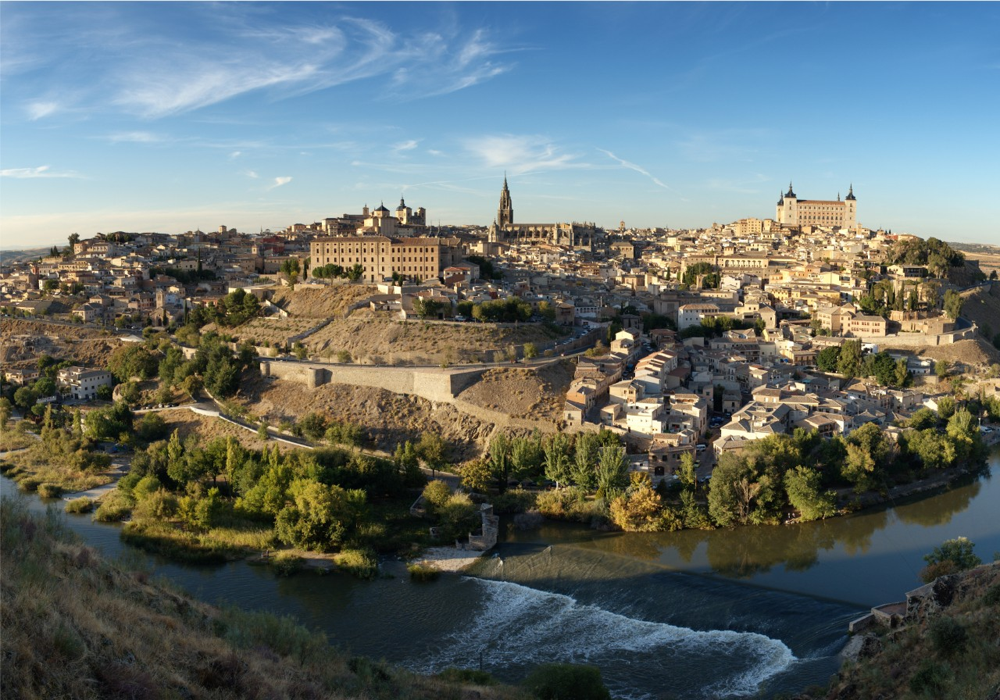

Toledo es un municipio y ciudad española, capital de la provincia homónima, en la comunidad autónoma de Castilla-La Mancha. Es conocida como «la ciudad imperial» por haber sido la sede principal de la corte de Carlos I5 y también como «la ciudad de las tres culturas»,6 por haber estado poblada durante siglos por cristianos, judíos y musulmanes. Con una población de 84 873 habitantes (INE, 2019), se trata del tercer municipio más poblado de la región, tras Albacete y Guadalajara.
El casco histórico está situado en la margen derecha del Tajo, en una colina rodeada por un pronunciado meandro. El término municipal incluye dos barrios muy separados del núcleo principal: el de Azucaica, en la orilla derecha del río, y el de Santa María de Benquerencia, situado prácticamente enfrente del anterior en la margen izquierda.
